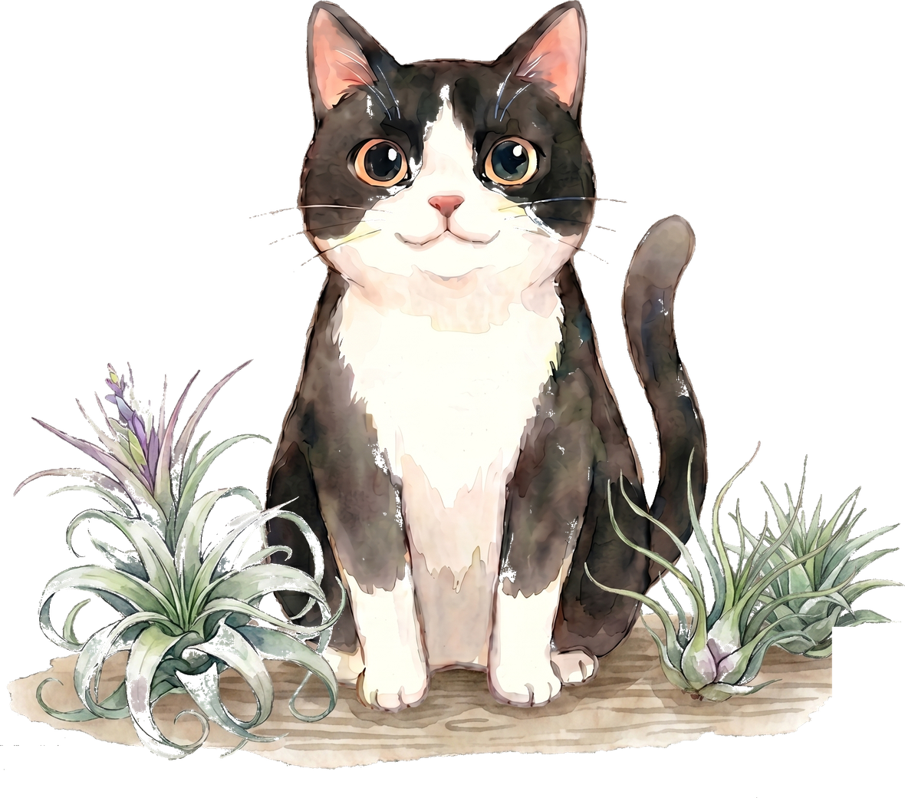

放在明亮散射光處，避免中午烈日直曬；室外通風且有遮陰的陽台最舒服，室內要留意光線與通風。

空氣鳳梨 Tillandsia
空氣植物照顧方法
保持空氣流動，悶濕環境容易讓葉心積水；澆水後請放在通風處乾透。
夏天約 1-3 天傍晚天氣涼水後噴水，冬天約 3-5 天清晨或下午一次；依環境濕度調整，寒流來停止澆水。
肥料非必要；若想補充，春夏每月 1 次稀釋液肥即可，濃度要淡。
小提醒：泡水需謹慎；泡後請倒掛或輕甩去除葉心積水，完全乾透後再放回通風處。
Join Us
掃描加入我們
Common Questions